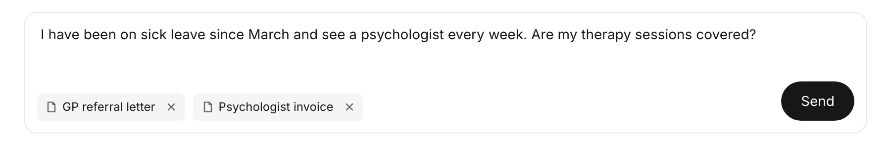
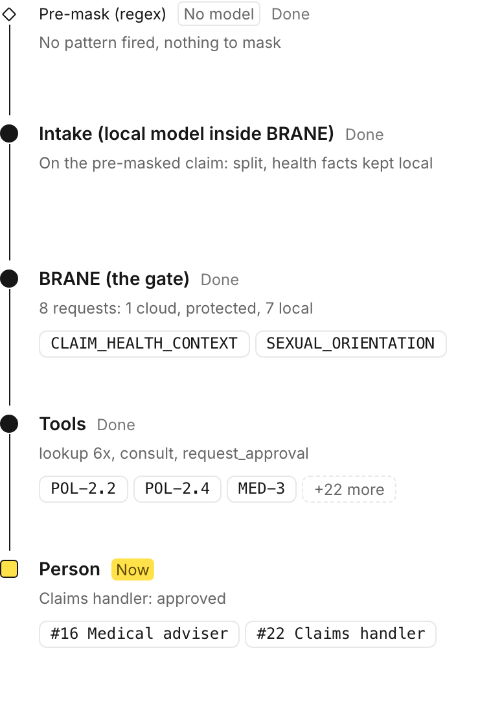
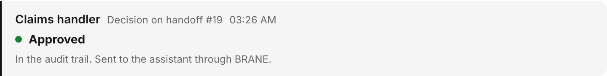

Claims handler
Claim filediagnosis · prescription · hospital note
Frontier model
Local model
outside the EU perimeter
health data may stay here
Pi agent
one Durable Object per claim
Pre-maskregex, no model
Classifierlocal model, per run
BRANEthe gate
Frontier model
Local model
placeholders only
health detail
refused
no other path to a model
src/primitives/detect.tsfor (const m of
text.matchAll(/\bPOL-\d{4}-\d{2}\b/g)) found.push({ kind: "POLICY_ID",
text: m[0] });
// the same value gets the same token everywhere
out = out.split(f.text).join(seen.get(f.text));
src/brane.ts · braneFetchif (url.origin !== base.origin) throw
new Error("only BRANE is allowed"); if (decision.routedTo === "" &&
response.status !== 422) throw new Error("BRANE returned no routing decision; nothing is sent");
POL-4410-17
[POLICY_ID]
model callchange one part
toolrun the evals
resultkeep if better
the agentthe harness
claim
evals/climb-latest.md · one kept changeCLAIM_HEALTH_CONTEXT
keywords: ent specialist, hearing aids kept mutated leaked 6 → 3
placeholder data





Health data may not
leave for a frontier model.
leave for a frontier model.
Every request passes
three checks.
three checks.
BRANE is the gate.
The same loop
improves the harness.
improves the harness.
A person decides.
Run the claim yourself
claims-harness.fred-755.workers.dev
Team Gezira · AI-Z Challenge Track · MAIN Summit 2026 · synthetic claims only